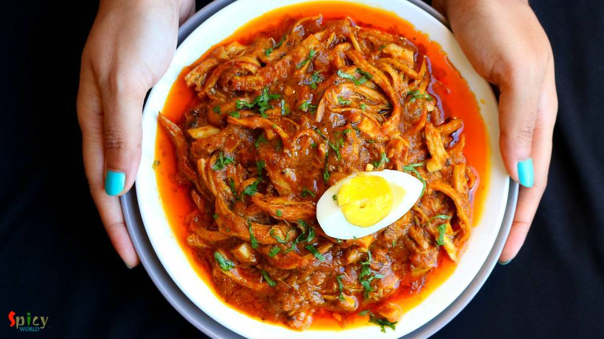
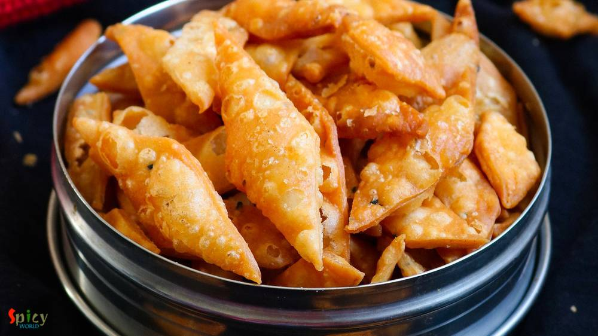
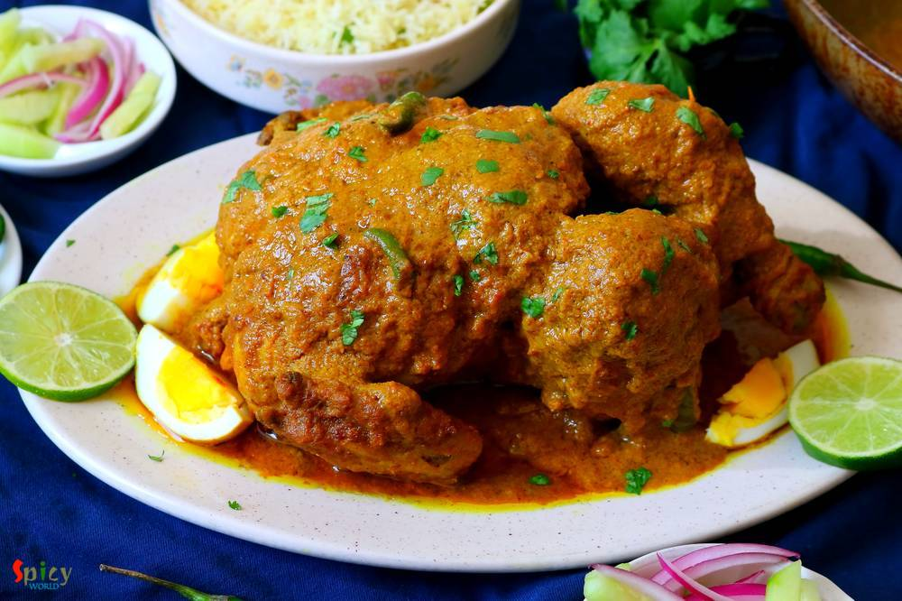
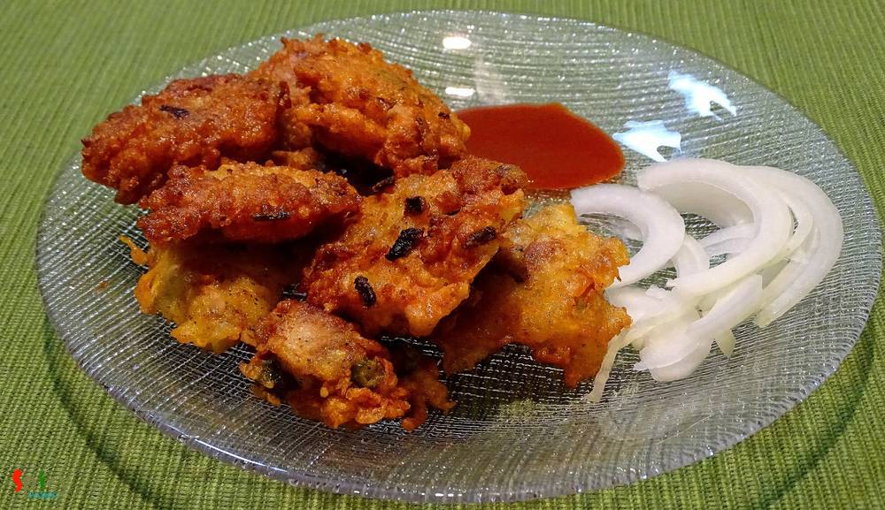

Simple and Easy Recipes

Patisapta with Makha Sondesh filling
Jan 14, 2020

Rosh Bora / Rosh Fuluri
Jan 13, 2020
- 
Restaurant style Chicken Bharta
Jan 12, 2020
- 
Nimki / Namak pare
Jan 7, 2020
Aloo Gobi Paratha / Aloo Fulkopir Porota
Jan 3, 2020
- 
Murgh Musallam
Jan 2, 2020
- 
Chicken Pokora (Pakora) / Batter fried Chicken
Dec 19, 2019

Fulkopir Rezala / Mughlai Cauliflower Gravy
Nov 19, 2019
Murgh Banjara Kabab
Nov 13, 2019
Texas Fall Color / Lost Maples & Garner State Park
Nov 8, 2019
- Patisapta with Makha Sondesh filling
- Rosh Bora / Rosh Fuluri
- Restaurant style Chicken Bharta
- Nimki / Namak pare
- Aloo Gobi Paratha / Aloo Fulkopir Porota
- Murgh Musallam
- Chicken Pokora (Pakora) / Batter fried Chicken
- Fulkopir Rezala / Mughlai Cauliflower Gravy
- Murgh Banjara Kabab
- Texas Fall Color / Lost Maples & Garner State Park
Spicy World
is a food blog where you can find Simple and easy recipes to make you and your loved ones happy and smile. Check out all our 307 recipes and 11 featured posts.Any Questions, feel Free to Email Us !!!
contact@spicyworld.inMar 30, 2020
Basically Chicken Satay is a dish from Thai cuisine, where small pieces of meat or fish cooked on a stick, and served with a spicy peanut sauce. But what today I am sharing is different than this one. Nowadays, if you see menu cards of Bengali weddings, Chicken Sathe will be the most common item. They serve Chicken Sathe as starter. First time I had it in a wedding and I was like wo! what a flavor and idea! In this Chicken Sathe recipe, marinated bite size chicken pieces will be skewered with onions and capsicums, then they will be batter fried until golden and lastly we will toss them in a spicy brown sauce. Believe me, you will be impressed with the end result. You can make it with fish or paneer also. Give this recipe a try and let me know how it turned out for you.

Mar 30, 2020
World is going through very critical time, the Corona Virus (COVID-19) has become a pandemic across the globe affecting 199 countries (as on March 29). This virus doesn't care about the religion, cast or financial status of any person or country. We all must be self aware and needs to build solid habit of maintaining self-hygiene. This blog will be completely diffetent from our other regular blogs, this will not have fancy food photographs, videos or our travel experience. We want every reader to please please follow the government and WHO defined guidelines in this time of crisis to avoid the upcoming turmoil in global economy. Whatever posts we are now making are either from old pics/videos or was from under processing content from previous time. We do respect and are aware that lots of common people are not having enough food for their family due to the lockdown in India. We do feel about them and we will make all possible effort to help any individuals whatever extent we can.

Feb 12, 2020
Mutton Rezala is a very popular dish from Mughlai cuisine. In this Rezala recipe medium sized mutton pieces will be cooked in a white, creamy, nut based rich gravy. 'Rezala' goes best with naan, biriyani, rumali roti or paratha. I have already posted several recipes on 'rezala'. The dish has a very unique taste. It is neither very spicy nor sweet. I made this last week and thoroughly enjoyed it with plain rice. Try this easy recipe in your kitchen and enjoy a lovely dinner with your family.
Jan 29, 2020
I love the buttery aroma of Kasuri Methi (dry fenugreek leaves), it makes almost every curry flavorful. Methi (fenugreek) seeds also has a great aroma but it tastes bitter. If you know how to use it properly then it can make big differences in taste and flavors. I cooked this Chicken Curry yesterday and it was a blast. Kasuri methi Murg Masala goes best with plain roti or rice. Please give it a try and let me know about your experience.
Jan 27, 2020
Bhapa means steamed. There are so many fish curry recipes in Bengali cuisine which calls for 'mustard' / sorshe, this particular item is a jewel. Fresh flavor of mustard oil and green chilies goes so well with shrimp. With some steamed rice this 'sorshe chingri bhapa' tastes best. You can make this with fish fillet or paneer also. If you are a shrimp lover and also don't know about this dish, then trust me and give it a try ... you can thank me later !
Jan 18, 2020
Tandoori chicken doesn't need any explanation. Its very popular in India and nowadays all over the world. There was a rumor that without 'tandoor/oven' you cannot make tandoori. But believe me today I am sharing 'oven method and stove top method' of making tandoori chicken. 'Tandoor' means oven made with clay and the heat comes from charcoal. In restaurants the actual tandoor flavour comes when juices of chicken drops on the charcoal, it creat a nice smokey flavor. You will fall in love with those charred, spicy chicken legs. Please give this recipe a try at your home and prove the rumor wrong!